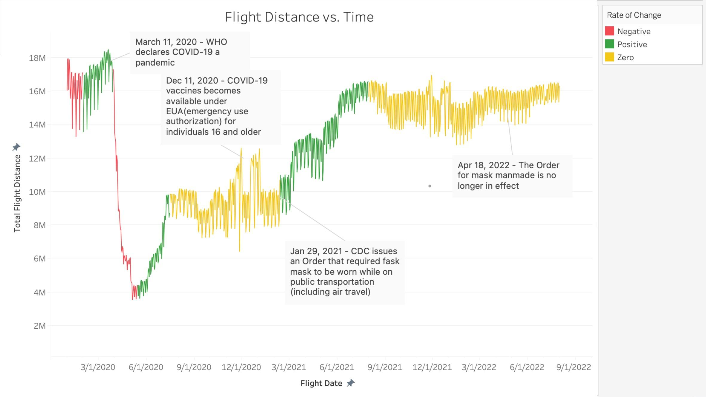
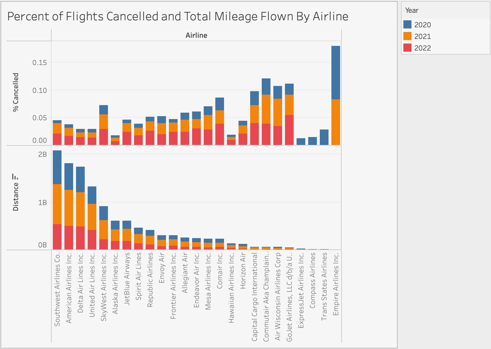

How did COVID affect flights?
As a whole, how did the pandemic affect all travel?

Here we can see a high level overview of how travel changed over the
course of the pandemic. There is a clear dip in the amount of travel
that occurs when the pandemic is officially declared, and a significant
increase in flights as we get more familiar with the pandemic and
developments like the vaccine and masking are made.
Did flights cancel in a respond to a rise in cases?
Airlines cancelled their flights, and some handled it differently than
others, but what drove these cancellations? One factor may be a rise in
new cases during the pandemic. Notice how in the early pandemic, there
was a delayed response to cancelling flights when there was a spike in
cases. However, as the pandemic progressed more preemptive measures were
taken to mitigate spread of the disease. In the second large spike on
the graph, marking the peak of the Delta variant, cancellations were
almost in sync with the trend of new cases.
How did individual states handle their travel?
Use the slider to see how flights were affected as cases grew and ebbed
throughout the pandemic. Notice how for much of 2020, there was a
significance in flights. Also take a look at how some states with more
lax COVID policies, like Florida and Texas, had growing cases, yet still
maintained a high number of flights.
How did individual airlines respond to the pandemic?

In the midst of the pandemic, the percentage of cancellations overall
increased. However, some airlines responded to the pandemic differently
than others. Airlines that flew the most miles had an immediate response
to the pandemic, cancelling more of their flights.